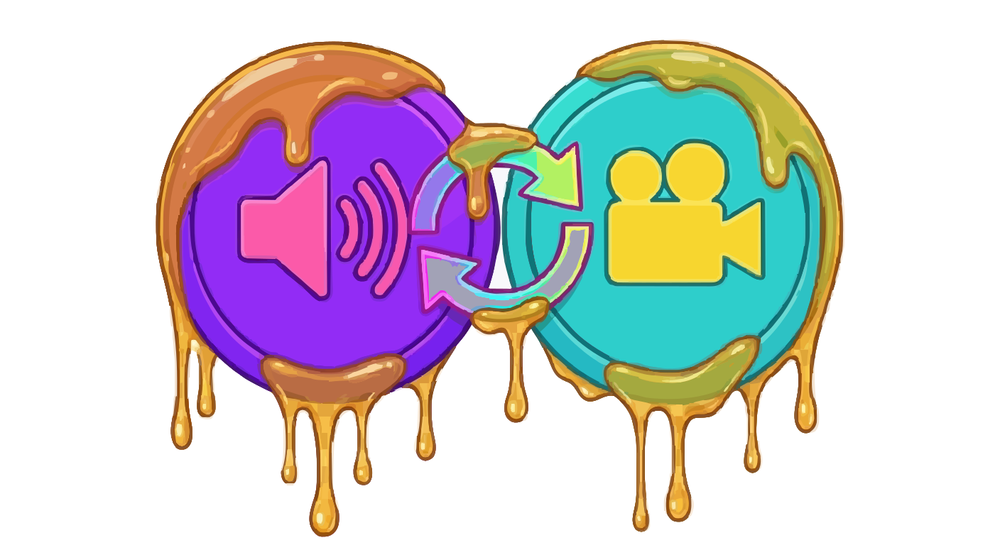

honeyplunge builds developer tools. Our first release is WebAudio Sync — precise audio synchronization for web apps, built for Bluetooth devices that add variable latency.

WebAudio Sync
Measure the real output latency of Bluetooth headphones, speakers, TVs and soundbars — then compensate it. Free open-source edition with manual tap sync and interactive pulse check on npm; Pro adds sample-accurate acoustic loopback and predictive drift correction.
A/V Sync Test — try it here
Drop a local video file: its sound plays through your (possibly Bluetooth-delayed) output while the picture renders on a canvas with an adjustable delay, so you can align them by ear.
Any local video with audio (e.g. an .mp4 with music or speech).
AudioContext: —
Native outputLatency: —
Video delay (compensation): 0 ms
Increase until audio and picture feel in sync. Bluetooth: 200–1000 ms+. Wired audio: leave at 0.
Load a video file above
More runnable examples live in the GitHub repository: test-tap-bounce.html (tap-to-the-beat rhythm game demo), test-bluetooth-latency.html (measure your real Bluetooth delay with a flash+click test), and test-audio.html (full latency detection workflow).